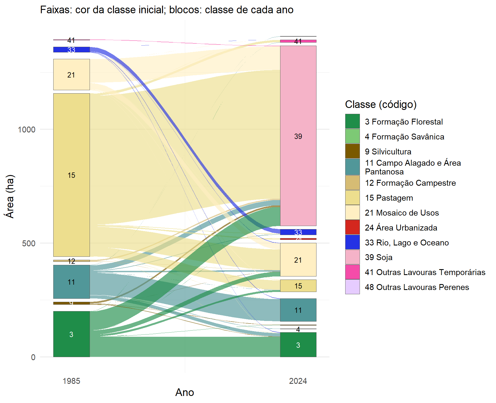
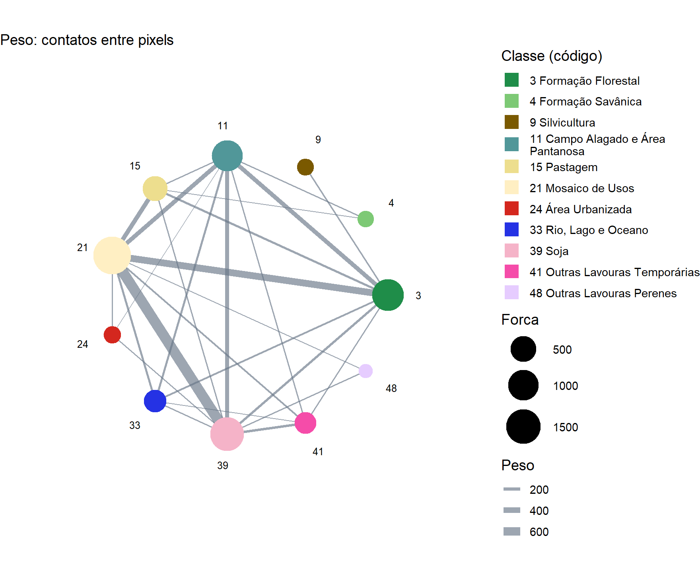

Capítulo 8 Mudanças e adjacências
Transições entre datas
Saber quanto cada classe cresceu ou encolheu não diz para onde a área foi.
land_change() responde a essa pergunta comparando os mapas pixel a pixel, em
duas ou três datas, e quantificando o que permaneceu, o que se converteu e em
quê:
mudancas <- land_change(mapas, years = c(1985, 2024))
mudancas$plot
| Classe | 1985 (ha) | 2024 (ha) | Ganho (ha) | Perda (ha) | Saldo (ha) |
|---|---|---|---|---|---|
| Soja | 0 | 792 | 792 | 0 | 792 |
| Pastagem | 717 | 53 | 12 | 676 | -664 |
| Mosaico de Usos | 136 | 146 | 119 | 109 | 10 |
| Formação Florestal | 200 | 107 | 20 | 113 | -93 |
| Campo Alagado e Área Pantanosa | 147 | 100 | 3 | 49 | -46 |
Entre 1985 e 2024, 78% da área mudou de classe. Quase toda essa mudança é de quantidade (820 ha), isto é, uma classe cresceu ocupando o lugar de outra; apenas 152 ha correspondem a trocas de posição entre classes. A floresta ilustra bem esse quadro: só 44% da formação florestal de 1985 continuava de pé em 2024, e os 20 ha que surgiram em outros pontos não compensaram os 113 ha perdidos.
Com years = c(1985, 2004, 2024), o diagrama ganha uma terceira coluna e mostra
as trajetórias nos dois intervalos.
Adjacências entre classes
land_to_graph() olha para a vizinhança: conta os contatos entre pixels de
classes diferentes e monta a rede da paisagem, em que cada nó é uma classe e a
espessura de cada ligação é o número de contatos entre elas. Com
weight = "boundary", a espessura passa a ser a extensão da fronteira, em
metros.
rede <- land_to_graph(mapas, year = 2024)
rede$plot
Em 2024, a classe mais conectada é campo alagado e área pantanosa, que faz fronteira
com 8 classes ao longo de 29,6 km de
bordas. As tabelas rede$node_metrics e rede$edge_metrics detalham grau,
força, centralidade e extensão de cada fronteira.